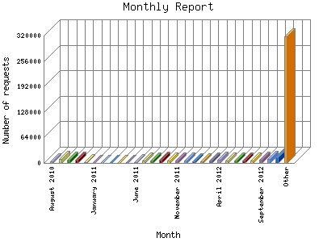

Analog 5.24
Analog 5.24 Report Magic for Analog 2.13
Report Magic for Analog 2.13The Monthly Report identifies activity for each month in the report
time frame. Remember that each page hit can result in several server requests
as the images for each page are loaded.
Note: Depending on the
report time frame, the first and last months may not represent a complete
month's worth of data, resulting in lower hits.

| Month | Number of requests | Percentage of the requests | |
|---|---|---|---|
| 1. | April 2016 | 509 | 0.10% |
| 2. | March 2016 | 5,647 | 1.20% |
| 3. | February 2016 | 8,248 | 1.77% |
| 4. | January 2016 | 7,955 | 1.70% |
| 5. | December 2015 | 5,779 | 1.23% |
| 6. | November 2015 | 13,000 | 2.78% |
| 7. | October 2015 | 13,957 | 2.98% |
| 8. | September 2015 | 17,468 | 3.72% |
| 9. | August 2015 | 14,784 | 3.16% |
| 10. | July 2015 | 7,559 | 1.61% |
| 11. | June 2015 | 8,171 | 1.74% |
| 12. | May 2015 | 7,505 | 1.60% |
| 13. | April 2015 | 6,920 | 1.48% |
| 14. | March 2015 | 4,963 | 1.6% |
| 15. | February 2015 | 5,463 | 1.17% |
| 16. | January 2015 | 7,112 | 1.51% |
| 17. | December 2014 | 6,669 | 1.42% |
| 18. | November 2014 | 8,960 | 1.91% |
| 19. | October 2014 | 8,010 | 1.70% |
| 20. | September 2014 | 7,752 | 1.66% |
| 21. | August 2014 | 7,263 | 1.56% |
| 22. | July 2014 | 6,889 | 1.48% |
| 23. | June 2014 | 7,569 | 1.61% |
| 24. | May 2014 | 7,340 | 1.57% |
| 25. | April 2014 | 5,606 | 1.20% |
| 26. | March 2014 | 5,313 | 1.13% |
| 27. | February 2014 | 6,137 | 1.31% |
| 28. | January 2014 | 7,522 | 1.60% |
| 29. | December 2013 | 7,877 | 1.69% |
| 30. | November 2013 | 7,527 | 1.60% |
| 31. | October 2013 | 6,408 | 1.37% |
| 32. | September 2013 | 7,139 | 1.52% |
| 33. | August 2013 | 6,996 | 1.50% |
| 34. | July 2013 | 8,076 | 1.72% |
| 35. | June 2013 | 8,061 | 1.72% |
| 36. | May 2013 | 6,455 | 1.38% |
| 37. | April 2013 | 7,812 | 1.67% |
| 38. | March 2013 | 6,375 | 1.37% |
| 39. | February 2013 | 7,615 | 1.62% |
| 40. | January 2013 | 7,755 | 1.66% |
| 41. | December 2012 | 9,071 | 1.93% |
| 42. | November 2012 | 13,265 | 2.83% |
| 43. | October 2012 | 9,463 | 2.1% |
| 44. | September 2012 | 8,030 | 1.71% |
| 45. | August 2012 | 6,751 | 1.44% |
| 46. | July 2012 | 6,554 | 1.40% |
| 47. | June 2012 | 5,682 | 1.21% |
| 48. | May 2012 | 6,457 | 1.38% |
| 49. | April 2012 | 7,502 | 1.60% |
| 50. | March 2012 | 5,179 | 1.10% |
| 51. | February 2012 | 4,107 | 0.88% |
| 52. | January 2012 | 3,732 | 0.80% |
| 53. | December 2011 | 6,629 | 1.41% |
| 54. | November 2011 | 6,144 | 1.31% |
| 55. | October 2011 | 6,347 | 1.36% |
| 56. | September 2011 | 8,513 | 1.81% |
| 57. | August 2011 | 6,638 | 1.41% |
| 58. | July 2011 | 5,634 | 1.20% |
| 59. | June 2011 | 2,457 | 0.52% |
| 60. | May 2011 | 0 | 0% |
| 61. | April 2011 | 0 | 0% |
| 62. | March 2011 | 0 | 0% |
| 63. | February 2011 | 0 | 0% |
| 64. | January 2011 | 0 | 0% |
| 65. | December 2010 | 1,127 | 0.24% |
| 66. | November 2010 | 7,535 | 1.60% |
| 67. | October 2010 | 7,723 | 1.64% |
| 68. | September 2010 | 11,027 | 2.36% |
| 69. | August 2010 | 4,912 | 1.4% |
Most active month September 2015 : 17,468 requests handled.
Monthly average: 7322 requests handled.
This report was generated on April 3, 2016 02:21.
Report time frame August 10, 2010 08:36 to April 3, 2016 04:37.
| Web statistics report produced by: | |
| Analog 5.24 | Report Magic for Analog 2.13 |